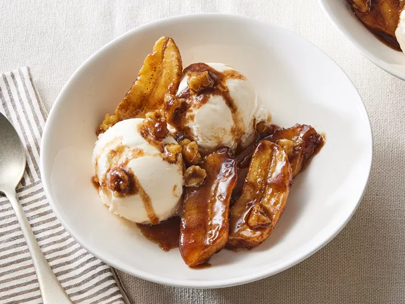

Home
Bananas Foster

Description:
Bananas foster is made by cooking sliced bananas and walnuts
in a buttery rum sauce and serving it over vanilla ice cream.
A Father's Day favorite we all love!
Ingredients:
- Butter
- Brown sugar
- Rum
- Vanilla
- Cinnamon
- Bananas
- Walnuts
- Ice cream
Steps:
- Gather all ingredients.
-
Melt butter in a large, deep skillet over medium heat.
Stir in brown sugar, rum, vanilla, and cinnamon; bring to
a low boil.
-
Place bananas and walnuts in the pan. Cook until bananas
have softened, 1 to 2 minutes.
- Serve at once over vanilla ice cream. Enjoy!